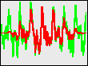

f06. Gabor — Capturing a matrix from MSP
Putting a slice of audio into a matrix
The gbr.slice~ object periodically grabs a slice of audio (a bite, a chunk, a grain, whatever you want to call it) from a MSP signal, places it in a FTM matrix, and sends out a reference to that matrix. The size of the slice can be any desired number of samples (or milliseconds, or Hz), and the period can likewise be any amount of time (with the caveat that the period must be greater than the MSP signal vector size). This is useful for capturing a small bit of audio in real time in order to analyze the audio signal or use it as a grain for synthesis or processing. The two arguments to the gbr.slice~ object are the size of the slice and the period at which slices are captured. Those values can be changed later with size and period messages.
Grabbing a slice this way is equivalent to multiplying the MSP signal by a rectangular window—a function that has a value of 1 for a particular period and a value of 0 everywhere else. Since the slices are captured at regular intervals of time, with no particular regard to the contents of the signal, it's most likely that the signal will not be at 0 at the beginnings and ends of the slices. (Note that this is different from the prepared matrices used in the previous tutorial, in which the matrix contents intentionally began and ended at or near 0.) Therefore, it's common practice to impose an amplitude envelope (a.k.a. a window function) on the sound slice to taper its beginning and its end down to 0. This is done by multiplying the slice by a function that begins and ends at 0 and rises to 1 in the middle. Two of the most common windowing functions are a trapezoid (similar to a rectangular window, but with a certain amount of fade-in and fade-out time) and a Hann window (an offset cosinusoid).
Trapezoid and Hann window functions
The gbr.wind= object multiplies a matrix by a specified window function. It's a logical companion to gbr.slice~, useful for tapering the ends of a slice of audio.
Using Captured Grains
Once a slice of audio has been grabbed, placed in a matrix, and tapered with a window function, it's available for use in granular synthesis. This patch shows a very simple example of that.
The incoming audio signal from MSP is periodically placed in an internal matrix by gbr.slice~, and it passes a reference to that matrix out its outlet. The gbr.wind= object multiplies that matrix by the specified window function, a Hann function, and passes the matrix reference on to the ftm.mess ($aslice set $1) which sets the fmat $aslice to contain that windowed slice of audio.
• Click on the message labeled "click here to see the window function" to see the amplitude envelope that will be applied to every slice of audio. It fills a matrix with the value 1, then multiplies that by the window function and displays it.
The gbr.slice~ object in this patch has been initialized to take 2205-sample slices. 2205 samples is a 50-millisecond chunk, assuming a MSP sampling rate of 44,100 Hz. The second argument specifies that it will do this with a periodicity of 1102.5 samples, which is to say that every 25 ms it places the most recently received 50 ms of signal (tapered by the Hann function) into the matrix $aslice. Note that the specified period (the second argument) may inlcude—and in many cases needs to include—a fractional number of samples in order to represent timing with the necessary precision. grb.slice~ will interpolate between sample values as needed, in order to keep as precise a periodicity as possible. (The size always has to be a whole number, since that refers to the size of the matrix.)
The gbr.fire~ object sends that matrix to gbr.ola~ with the same periodicity: every 25 milliseconds. So, in effect, it is placing overlapping 2205-sample audio grains into gbr.ola~ once every 1102.5 samples. (Again, the necessary interpolation is performed to retain sub-sample accuracy of timing.) Because gbr.fire~ is firing each grain at exactly the same rate at which it was captured by gbr.slice~, and because it is firing each grain exactly half a grain length later than the previous one, and because of the symmetrical nature of the Hann function (it is horizontally symmetrical, and the sum of its two halves is always 1) the grains overlap with no change in either the content or the amplitude of the sound. This unaltered reproduction of the original sound is a special case that applies only when those three conditions are met; if any of those factors changes, the granular synthesis will differ from the original sound.
• Click on the message startwindow to turn on MSP, choose Sound File from the popup menu, open a sound file of your choice, click on the toggle to turn looping on, click on the toggle to start soundfile playback, and adjust the gain~ to a comfortable listening level. The sound will initially be unchanged by the granulation, windowing, and overlapping playback process, for the reasons described in the preceding paragraph.
You will notice that the audio slice captured by gbr.slice~, shown in green in the ftm.vecdisplay, usually does not begin and end with the value 0; once it has been multiplied by the window function, it begins and ends at 0, as shown in red.

• Click on the eight different presets in the preset object to hear a few different granular effects. The first four presets use overlapping grains played at an audio frequency to give continuous sound; the last four presets play grains at a sub-audio rate for rhythmic effect.
1. 50-ms grains (1/20 of a second) captured and played 40 times per second with a Hann window, resulting in perfectly overlapping grains and thus causing no change to the incoming sound.
2. 1/20-second grains, changing content ever 1/40 of a second, played 640 times per second. The result is like convolving a 640 Hz impulse train with the windowed input sound, causing regions of emphasis at all multiples of 640 Hz (not unlike a comb filter) and a significant overall gain in amplitude because of the 16 times overlap factor of the grains.
3. 10-ms grain played back at 400 Hz (i.e. every 2.5 ms, thus with a 4 times overlap) to create a tone of constant amplitude, but changing content every 2.5 seconds.
4. 50-ms grains played back at 400 Hz, with a new grain captured every 1/16 of a second. Thus, harmonics of 400 Hz are heavily imposed, and a formant change occurs 16 times per second as new grains are placed in the matrix.
5. Grains of 1/16 of a second are played 8 times per second, with a new grain captured 4 times per second. The result is a steady staccato pulse of 8 short notes per second, with the timbre changing every 2 notes.
6. Grains of 1/10 second are played 10 times per second, with a new grain captured every 0.3 seconds. The result is a "triplet" feel; the grain changes every three notes.
7. Grains of 1/10 second are played every 1/6 second, with a new grain captured every 3/4 second, resulting in an alternating pattern of 5 repetitions and 4 repetitions.
8. Grains of 10 ms are played 12 times per second, changing every 2/3 second (every 8 notes). Isolated 10ms grains are almost too short to carry much perceptual effect of definite pitch, but the timbre clearly changes according to the frequency content of the grain.
Summary
The gbr.slce~ object captures a segment of a MSP signal and places it in a FTM matrix for analysis or use in granular synthesis. The size of the segments may or may not be the same as the periodicity with which slices are captured. Isolating an unaltered slice of audio in real time is equivalent to windowing the signal with a rectangular envelope. The gbr.wind= object multiplies a matrix by a specified envelope function in order to taper the ends of these audio slices. Audio segments that have been captured and tapered by gbr.slice~ and gbr.wind= can be used for synchronous granular synthesis by gbr.fire~ and gbr.ola~, for creating continuous tones or rhythmic patterns of audio segments. The the spectral content of windowed slices can be analyzed by various other Gabor objects, as is demonstrated in the next tutorials.